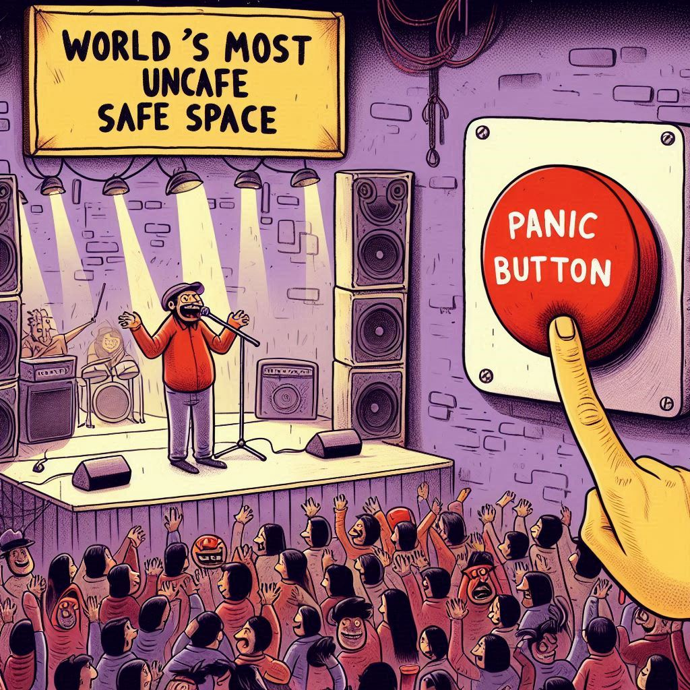
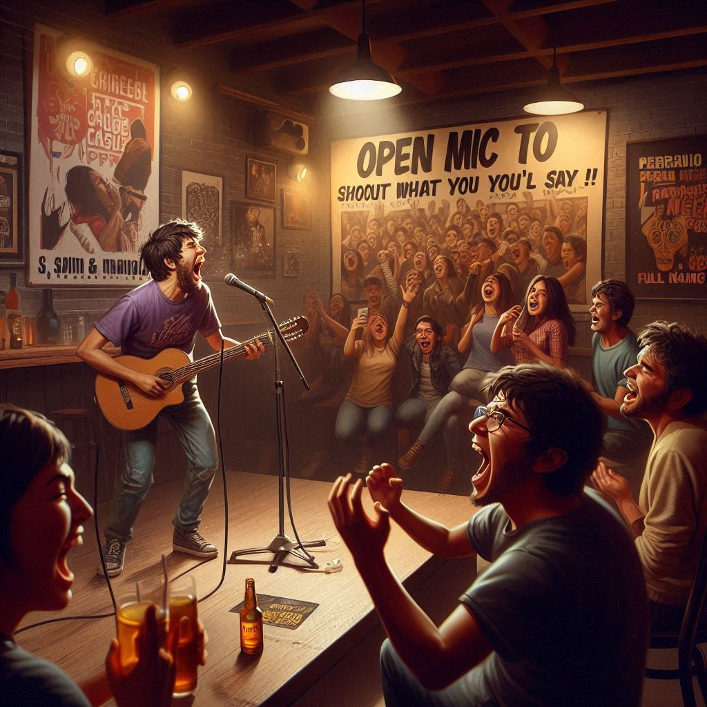
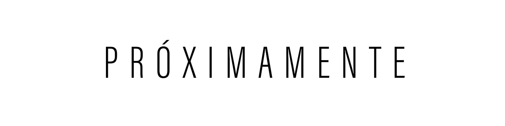
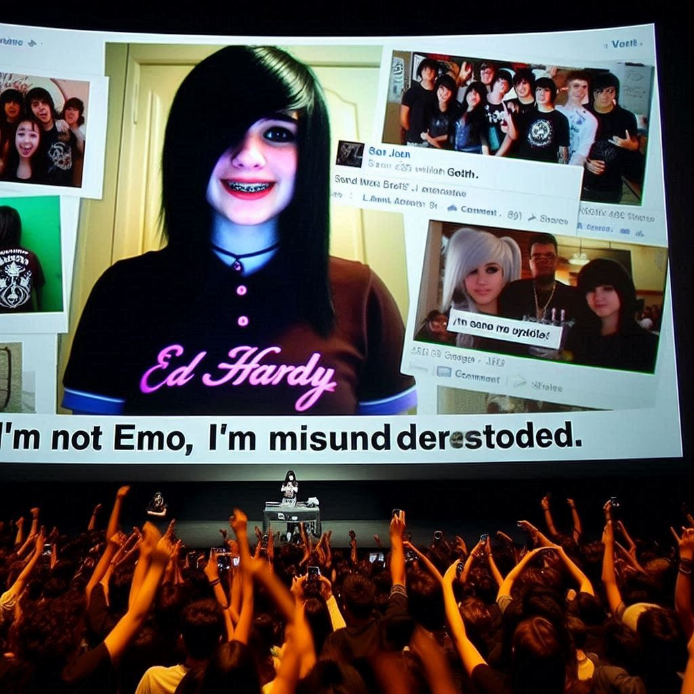
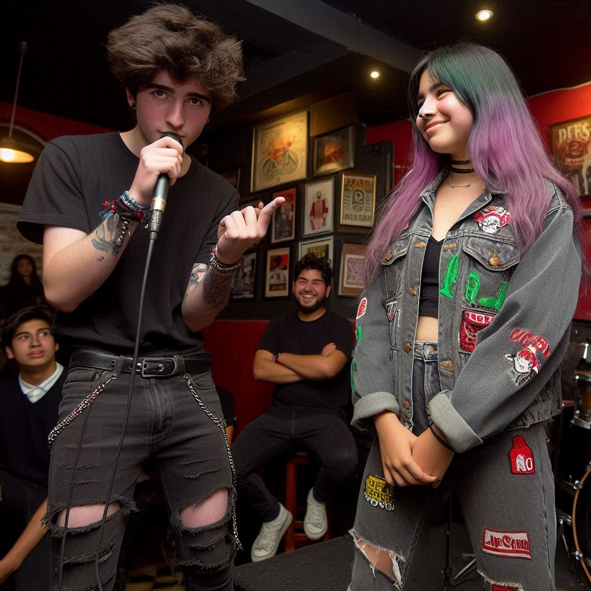

“Este es el espacio seguro más inseguro del mundo. Sube al escenario y cuéntanos esa vez que te caíste frente a tu crush, confundiste al cura con el mesero, o también casi te vas en el sepelio del tío Beto (con él). Aquí no te vamos a juzgar… al menos no sin antes reírnos a carcajadas.
BONUS: Hay botón de pánico: si te pones a llorar, suena un solo de batería de Slipknot hasta que te repongas.

"EVENTO: Tu ex no era tan especial ft. Salim & Manolo (ex-Libido)"
“Micrófono abierto para gritar lo que no le dijiste, cantar lo que no superaste y admitir que tú también stalkeas. Acompáñanos con los increíbles Salim & Manolo y sus éxitos como: Mariposas, Igual que ayer y más.
Recuerda: Aquí no juzgamos, sólo aplaudimos. Bonus: si mencionas su nombre completo, tocan los violines dramáticos. Si te reconcilias a mitad del evento, te expulsamos.
En los descansos de Salim & Manolo pondremos a Rudy La Scala, ¡sin llorar!

Porque tú lo pediste...
Porque tú lo quisiste

El evento más esperado con...
Tus mejores momentos
Porque sus momentos felices son siempre a nuestro lado (¿o era al revés?... nah). Ya sea en un pogo que casi termina en ambulancia, en una tocada donde el bajo retumbaba más que tu conciencia, o simplemente cuando te reíste hasta llorar escuchando a alguien contar que confundió el baño con el escenario… todo eso queda aquí, guardado con amor y fotos movidas.
Revive lo que pasó, lo que no debió pasar y lo que probablemente seguirá pasando si sigues viniendo a nuestros eventos.
“Yo Sobreviví a Mi Propio Ridículo”
Momento Cringe: Un pata subió al escenario para contar cómo se cayó de una moto en plena primera cita. Todo bien… hasta que mostró la cicatriz y dijo: “y así me declaré”. Spoiler: la flaca se fue con su amigo. Aplausos. Lágrimas. Y le dimos un peluche con forma de yeso.
“Lo Vi En Mis Recuerdos de Facebook y Quise Morir”

Momento Cringe: Una chica mostró una foto suya del 2011 con polo Ed Hardy, flequillo hasta las cejas y caption que decía: “No soy emo, soy incomprendida”. La proyectamos en pantalla gigante. El público gritaba “¡gótica de San Juan!” y ella dijo “sí, pero gótica con estudios”. Se ganó el respeto eterno.
“Declaraciones Fallidas y Acordes Dolorosos”

Momento Cringe: En pleno evento, un pata agarra el micro y le declara su amor a Laurita, bien feeling: “Eres como mi último sticker de colección, solo tú me completas”. Todo el bar aplaude, hasta que del fondo aparece el guitarrista que había tocado antes y suelta: “Oe, Laurita es mi flaca, pe”. Silencio. El DJ pone Creep, el flaco traga saliva y dice: “No sabía, mano… sorry”. Le dimos una chela, un abrazo y un vale para terapia.